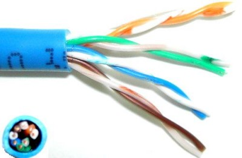
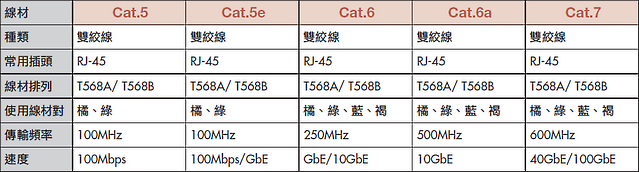
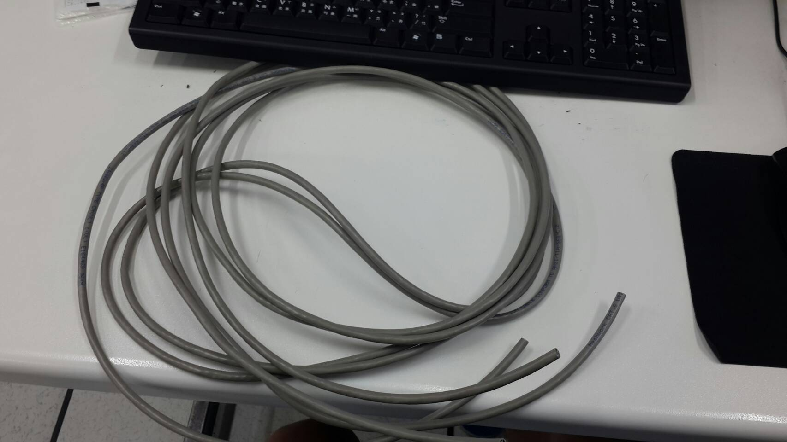
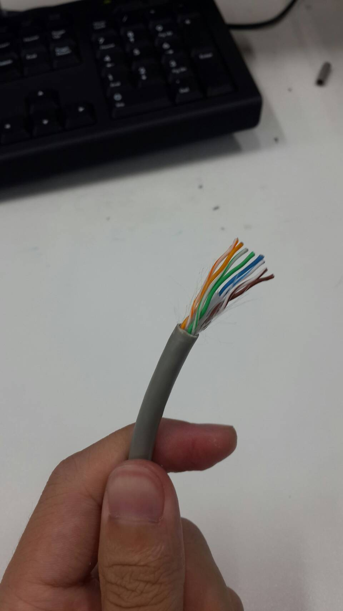
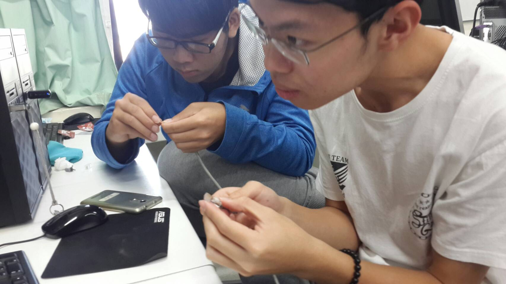
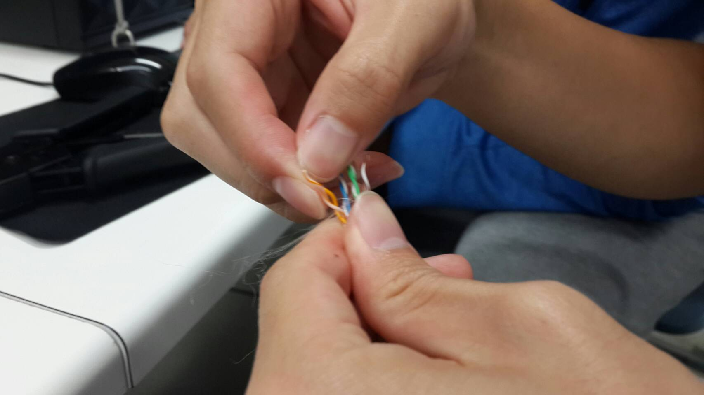
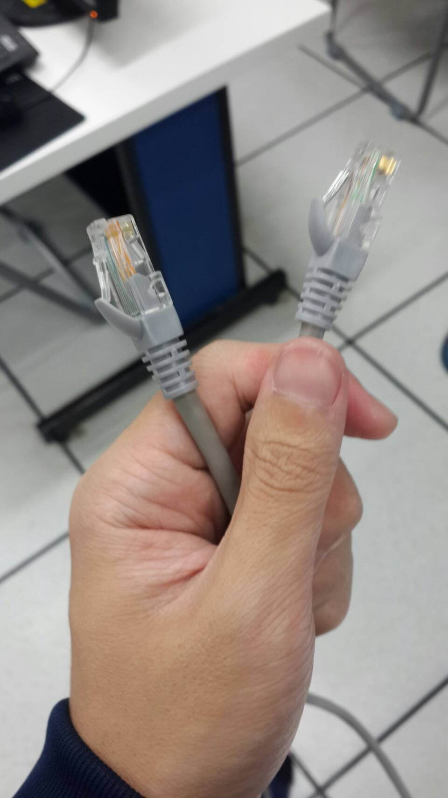

自製網路線
2017.03.24
今天的課程是自製568B規格的網路傳輸線，用來當作班級SEVER的網路線。
線材介紹
● 雙絞線（Twisted-Pair）
是由成對、外面包覆著一層絕緣材料的銅線對絞而成，與一般的電線最大的差別在於可以減少雜訊的衰減，所以被選為架設網路的主要線材，雙絞線有分遮蔽式和無遮蔽式雙絞線，但是一般我們所使用的都是無遮蔽式雙絞線（如下圖）。

雙絞線的標準總共分為七的等級，分別為CAT（Category）1~7，一般我們所使用的線材大部分都是Category 5的，除非是達到超高速乙太網路（1000 Mbps）又要求穩定的話，才會需要使用到5e以上的線材。

接著我們來瞭解一下壓製網路線的標準規格，根據EIA/TIA的規定有兩種規格，第一種是EIA/TIA A，第二種是EIA/TIA B，線的壓製順序如下表格，一般我們如過是透過分享器或集線器來連接電腦的話，只需要壓制平行線即可（平行線：兩端接頭皆為EIA/TIA 568B），如果是接機器對機器的話，需要製作跳線（Crossover：一端為EIA/TIA 568A、另一端為EIA/TIA 568B）。
以下是今天的過程照片 



